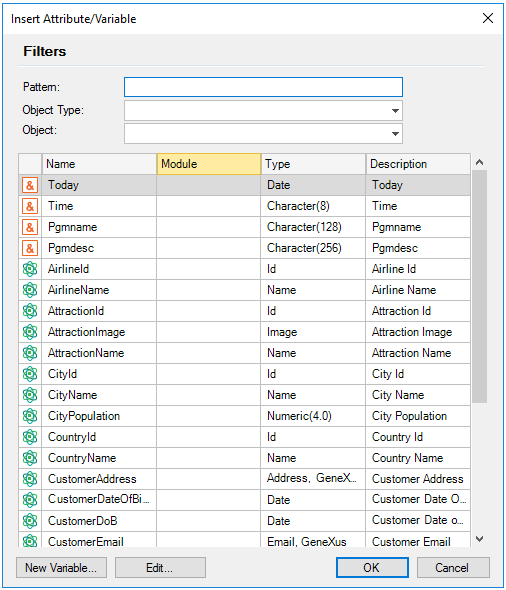
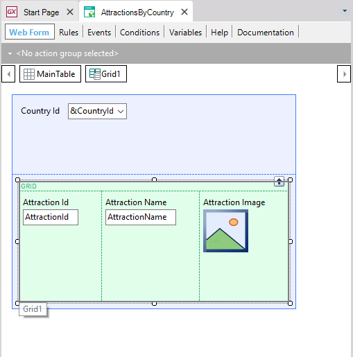
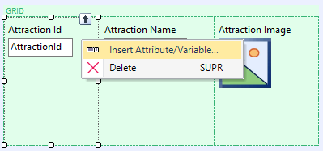
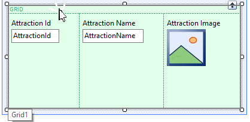

Grid control
Displays data associated with many records; depending on the GeneXus object in which it is located, the Grid control also allows you to add, change, and/or delete data. It can be used in Transaction objects, Web Panel objects, Panel objects (and also in Work With for Smart Devices objects and Work Panel objects) . It allows you to include both attributes and variables. When used in a Transaction (grid with Base Table) it makes it possible to insert, update, and/or delete records in the corresponding associated table. When used in a Web Panel (grid with/without Base Table, depending on whether it contains attributes and/or variables), it will display the data stored in tables; the variables can also accept values. To add a grid to the selected location, drag the Grid icon () from the Toolbox to the Form/Layout. This will open the Selector window to select which attributes/variables you want to include inside it:  You can select multiple lines by clicking on them while holding down the Shift or Ctrl keys. When the selection is finished, the selected attributes and/or variables will be inserted in the grid. When used in a Web Panel object, the Grid will contain one column for each attributte/variable:  When used in a Panel object, there is more flexibility regarding the location of the attributes/variables in the Grid (they can be on one side, below, above, or between them). The order of the attributtes/variables can be switched. To do so, select the attribute/variable to move and an arrow will be displayed that indicates the possible new location. Then, drop it at the desired location.
You can add more attributes/variables by right-clicking one of the attributes and selecting in the contextual menu: Insert Attribute/Variable...  You can also drag & drop an attribute/variable from the Toolbox in the grid. If you select the entire grid, the copy/cut/paste/etc. options will be available in the Edit option of the IDE; regular shortcuts (Ctrl+C, Ctrl+V, etc.) also work. Tip: To quickly select a grid, position the mouse cursor on the upper part of the control, as shown in the figure below. Considerations
Runtime Features of Grids
|


| Sub Categories |
| Category:Grid control |